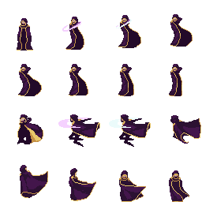
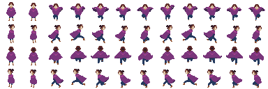
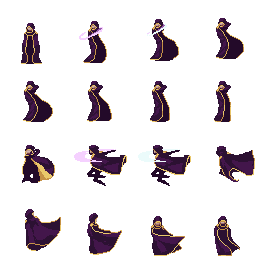
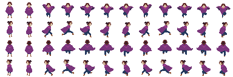
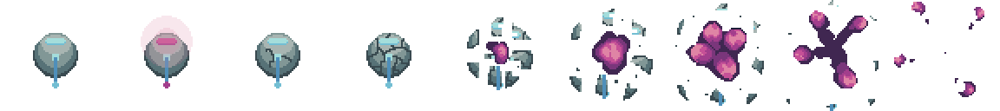
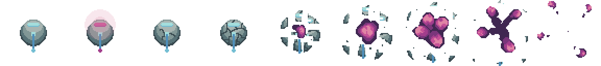

2022, Fullstack app and website development as a Research Assistant for Maura O'Leary. Made with Unity C#, React.js, and Firestore Database.
Research paper to be presented and published at the LSA 2023.


2019, Branching dialogue RPG concerning mental health, relationships, and the purpose of life. Made in Unity C#
 



2022, Roguelike dungeon crawler with linguistic elements integrated into the magic system. Made in Unity C#
Procedural Dungeon Generation Showcase
Features

2020, Casual relaxation game made to help me and my friends fall asleep. Made in Unity C#

 

2021, Ludum Dare 49 submission. Top down shooter with A* pathfinding, weapon variance, timers, and 'skill' features.